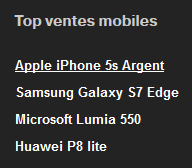
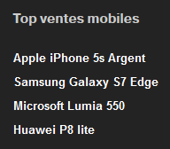

Make the focus visible at all times
Target: everyone and especially people with visual impairments, cognitive limitations, motor disabled, having attention difficulties or using a device outdoors.
When: as of design and during development.
Description:
Do not hide the focus and if necessary make it visible enough (e.g. by modifying the outline CSS property) on all elements likely to receive it (links, buttons, form elements). You can also accentuate the visibility of the focus so that it is easily identifiable.
Make sure to provide a sufficient level of contrast so that it is visible to all (see measure the level of contrast of colors).
When an effect is visible on an element during mouse-over (e.g. :hover CSS property), this effect must also be displayed when capturing the focus (:focus).
It is possible, with Javascript code, to display the outline only during a keyboard navigation (ie not to display the outline when clicking a mouse, which also activates the : focus state:
var head = document.head || document.getElementsByTagName(’head’)[0];
var axsStyles = head.appendChild(document.createElement(’style’));
document.addEventListener(’mousedown’, function() {
axsStyles.innerHTML = ’* {outline:none !important}’;
});
document.addEventListener(’keydown’, function() {
axsStyles.innerHTML = ’’;
});
Demonstration of visibility of focus on keyboard navigation only
Checklist:
In many front-end frameworks or CSS resets, the outline property (to visualize the focus) is disabled (outline: none;), don’t forget to redefine it and check that the focus is visible on all focusable elements.
Users’ goal:
Allow focus visibility on all elements, especially for keyboard users (visually impaired, motor disabled or those with attention or memory difficulties and using devices outdoors).
Do: Focus set on the « Apple iPhone 5s argent » link, clearly visible.

Don’t: Focus set on the « Apple iPhone 5s argent ».

Reference WCAG :